Deuxième session de saisie dans OSM
1 Objectif
Utiliser un plugin QGIS pour saisir le graphe piéton et importer le résultat dans OSM.
3 Présentation du plugin QGIS
Installer le plugin dans Qgis
importance du paramétrage : 5 étapes en rouge
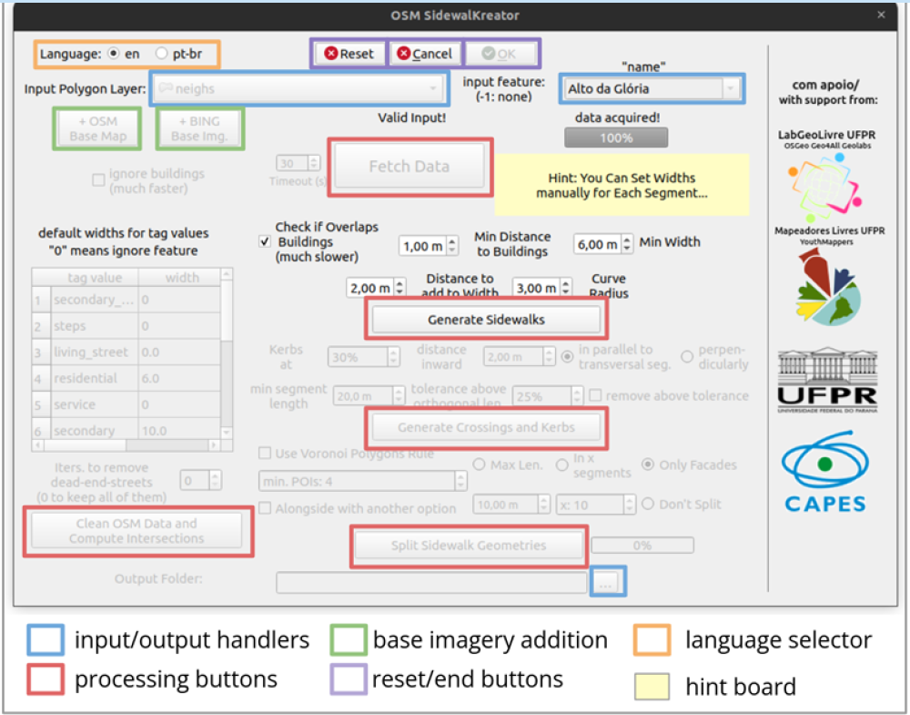
4 Une règle à respecter
Dés le départ, on peut effacer mais ce n’est pas une pratique de type collaborative que d’effacer le travail d’autrui !
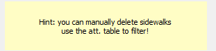
Ici 4 valeurs sur 66.
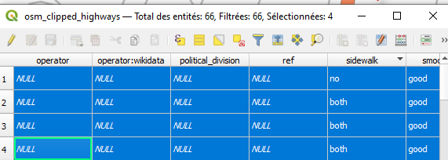
Il vaut mieux examiner le cas particulier.
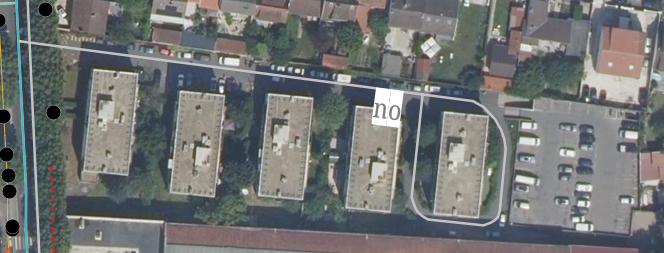
5 Quelques tests
Afin de comprendre les options proposées dans le plugin, on fait quelques tests avant / après.
Le cours permet de voir ce qui se passe si on joue :
un buffer
la largeur des rues
l’indicateur fourni sur le rapport périmètre / aire
la distance aux bâtiments
Enfin, observer les zones sûres et d’exclusion permet également de comprendre le taggage existant.
5.1 Carte 3 : Un test sur un zone et son buffer
Faire le buffer (cf procédure 8 Géotraitements QGIS)
Lister les sf Qgis permettant d’aller rapidement
donner 5 mn pour faire la carte
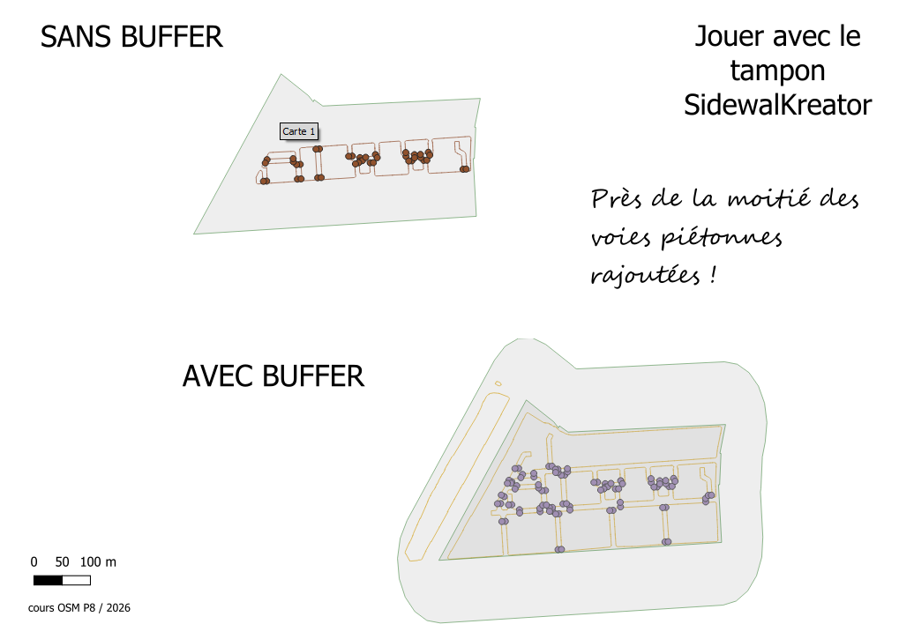
5.2 Quels paramètres ?
5.2.1 Largeur des rues
5.2.1.1 Hiérachie OSM
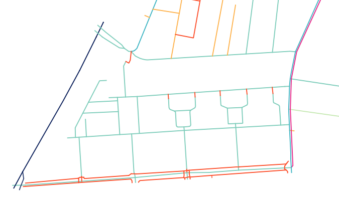
dans taginfo, repérer les valeurs et leur signification.
faire une proposition de modification
5.2.1.2 Choix largeurs
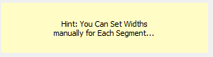
Par défaut :
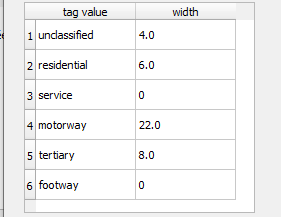
Quelles modification possibles ici ?
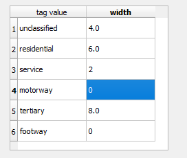
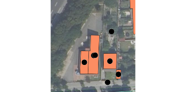
Rajouter cette voie change la perspective du plugin. Si on la rajoute en service, il faudra alors modifier la largeur dans le plugin.
5.2.2 Indicateurs : aire et périmètre (carte 4)
Ce rapport aire / périmètre permet de repérer des zones problématiques :
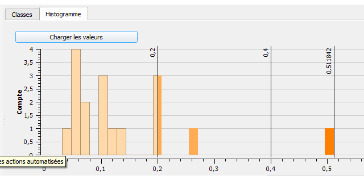
Dans la plupart des cas, l’aire de la zone trottoir et le périmètre tourne autour de 0,1. Cela signifie que pour 1 m² de trottoir, il y a 10 cm de longueur.Quand ce rapport augmente, on se retrouve avec trop de m². Cela permet de repérer les îlots et les rond points (normalement pas de franchissement piéton).
Dans notre cas, il y a 3 zones problématiques.
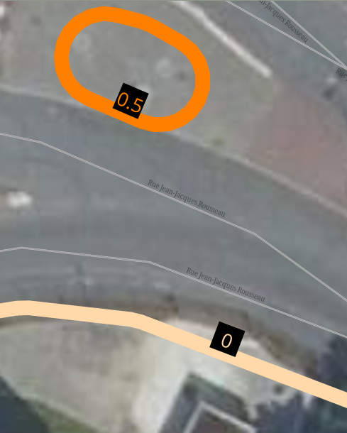
Ici il s’agit d’un ilôt et le cheminement piéton sera de toutes façons uncontrolled parce que non prévu ! Il faudrait prévoir un aménagement.
En fait, il convient vraiment de se poser la question des aménagements piétons sur la zone :
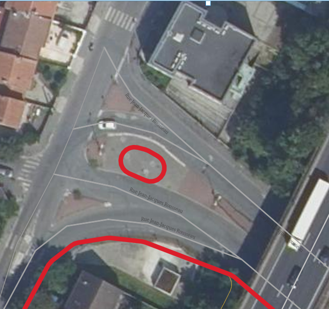
Nous verrons la deuxième zone plus bas.
CARTE 4 : intégrer un histogramme dans une mise en page Qgis
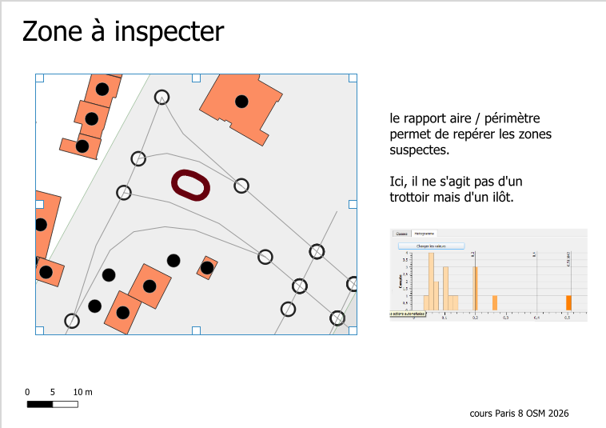
compétences Qgis : - style gradué sur l’indicateur aire / périmètre avec utilisation de l’histogramme dans la boite de dialogue Voir aussi - outils de traitement = histogramme (enregistrer en .png pour le remettre dans la mise en page)
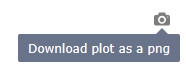
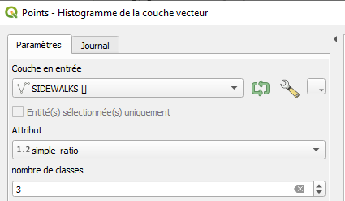
5.2.3 Bâtiments ou pas ?
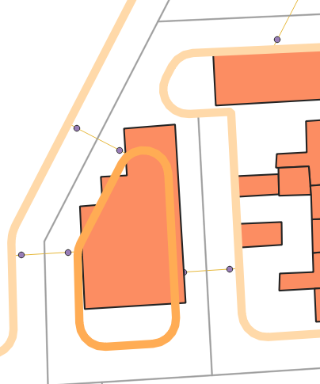
A noter que cette zone était déjà repérable grâce au ratio aire / périmètre
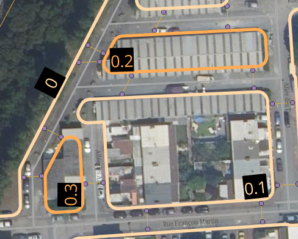
5.2.3.1 Rajouter des voies
En fait, l’image met en relief l’absence de voie.
Il manque ici une voie de service, on la rajoute puis on relance avec les paramètres par défaut et une voie de service avec une largeur de 2.
5.2.3.2 Jouer sur distance bâtiments - voie (carte 5)
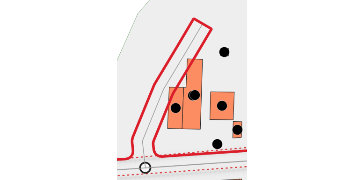
Pour obtenir, un non chevauchement sur les bâtiments on met au minimum :
la distance aux bâtiments et la largeur
la distance à ajouter à la largeur
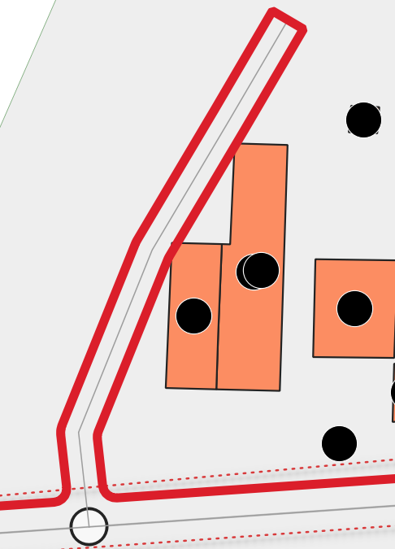
CARTE 5 : carte avant après avoir joué sur les paramètres
5.2.4 Zones d’exclusion ou zones sûres
Il s’agit de prévoir l’intégration dans OSM.
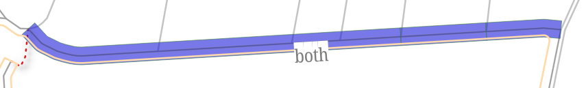
Ici, comme la rue est taggée sidewalk=both, le plugin ne rajoute pas de voie piétonne. pour le Plugin, c’est une zone sûre. A l’utilisateur de supprimer le tag dans OSM et de rejouer le plugin pour permettre que le trottoir soit retracé correctement.
Il existe également les zones d’exclusion : si dans la surface, il y a plus de 50 % de footway existante, le plugin ne propose aucun trottoir. Le travail a déjà été fait, le plugin ne propose aucune modification.
6 Import dans JOSM
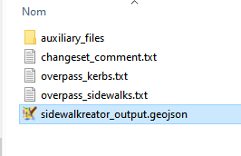
6.1 Exercice d’entraînement
Avant de faire une nouvelle saisie, farie l’exercice sur la création de rond-point afin d’aborder la question des raccourcis.
6.2 Envoi de données dissuadé
On ouvre le geojson résultant du plugin directement dans JOSM, on affiche l’imagerie, et on observe.
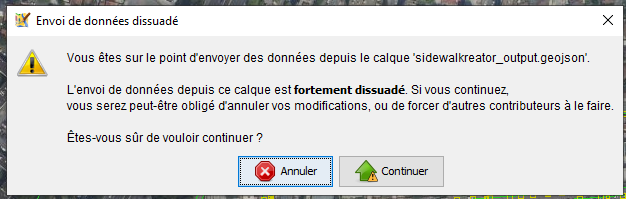
6.3 Ajustement à la photo
Quels sont les raccourcis qui vont être nécessaire ?
6.4 Utilisation du validateur
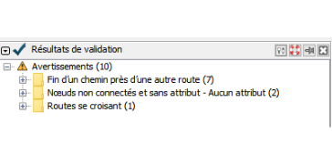
6.5 Commentaire
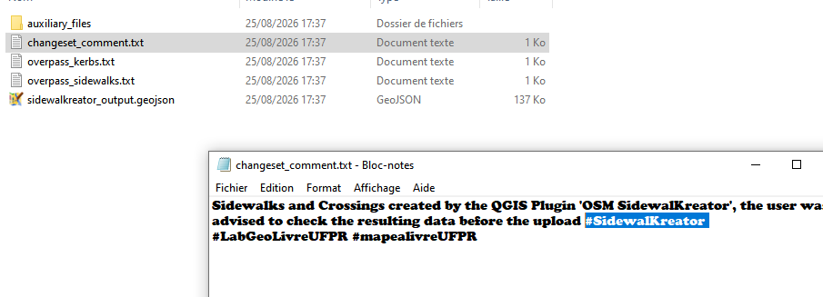